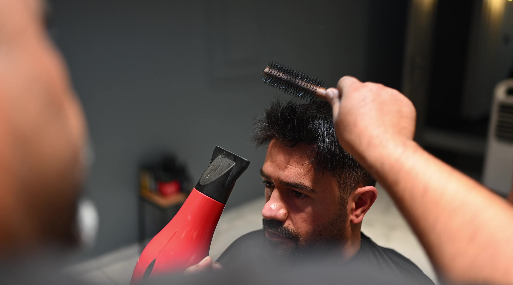

SAÇ KESİMİ & TASARIM
Günlük kullanımına uygun bir form.
Saç yapısı, yüz hatları ve kullanım alışkanlığı birlikte değerlendirilir. Kesim, geçişler ve son şekillendirme tek bir bütün olarak ele alınır.
- Saç ve yüz formu değerlendirmesi
- Kesim ve geçişlerin oluşturulması
- Son şekillendirme